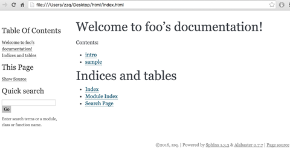

安装与基本使用¶
本文更新于 2018.05.09
安装软件包¶
必须安装的软件包当然是sphinx了:
sudo apt-get install python-pip
sudo pip install -U sphinx
在macOS上, 安装时可能会报错: Cannot uninstall ‘six’, 需要用以下命令安装:
sudo pip install sphinx --ignore-installed six
如果在macOS上安装好之后编译html等还有问题, 请参考 生成PDF 安装较低版本的sphinx.
如果要从代码注释生成API文档，需要安装doxygen和breathe插件，后者可以让sphinx处理doxygen生成的xml:
sudo apt-get install doxygen
sudo pip install breathe
如果要生成pdf文件，需要安装texlive:
sudo apt-get install texlive-full
如果条生成中文pdf，则需要确认安装了必要的东亚语言和字体包，比如texlive-lang-cjk和texlive-fonts-recommended，可以参考http://www.tuicool.com/articles/nAJJVb 。
项目建立¶
最简单的方法是建立工作目录后（这里是doc），在其中运行sphinx-quickstart。运行此命令后sphinx会问你一些问题，根据情况回答即可。在这里我建立了一个名为foo的Project，版本是1.0，作者名为zzq，将source与build目录放开，其他都选默认:
zzq@vmware:~/doc$ sphinx-quickstart
Welcome to the Sphinx 1.3.3 quickstart utility.
Please enter values for the following settings (just press Enter to
accept a default value, if one is given in brackets).
Enter the root path for documentation.
> Root path for the documentation [.]:
You have two options for placing the build directory for Sphinx output.
Either, you use a directory "_build" within the root path, or you separate
"source" and "build" directories within the root path.
> Separate source and build directories (y/n) [n]: y
Inside the root directory, two more directories will be created; "_templates"
for custom HTML templates and "_static" for custom stylesheets and other static
files. You can enter another prefix (such as ".") to replace the underscore.
> Name prefix for templates and static dir [_]:
The project name will occur in several places in the built documentation.
> Project name: foo
> Author name(s): zzq
Sphinx has the notion of a "version" and a "release" for the
software. Each version can have multiple releases. For example, for
Python the version is something like 2.5 or 3.0, while the release is
something like 2.5.1 or 3.0a1. If you don't need this dual structure,
just set both to the same value.
> Project version: 1.0
> Project release [1.0]:
If the documents are to be written in a language other than English,
you can select a language here by its language code. Sphinx will then
translate text that it generates into that language.
For a list of supported codes, see
http://sphinx-doc.org/config.html#confval-language.
> Project language [en]: zh_CN
The file name suffix for source files. Commonly, this is either ".txt"
or ".rst". Only files with this suffix are considered documents.
> Source file suffix [.rst]:
One document is special in that it is considered the top node of the
"contents tree", that is, it is the root of the hierarchical structure
of the documents. Normally, this is "index", but if your "index"
document is a custom template, you can also set this to another filename.
> Name of your master document (without suffix) [index]:
Sphinx can also add configuration for epub output:
> Do you want to use the epub builder (y/n) [n]:
Please indicate if you want to use one of the following Sphinx extensions:
> autodoc: automatically insert docstrings from modules (y/n) [n]:
> doctest: automatically test code snippets in doctest blocks (y/n) [n]:
> intersphinx: link between Sphinx documentation of different projects (y/n) [n]:
> todo: write "todo" entries that can be shown or hidden on build (y/n) [n]:
> coverage: checks for documentation coverage (y/n) [n]:
> pngmath: include math, rendered as PNG images (y/n) [n]:
> mathjax: include math, rendered in the browser by MathJax (y/n) [n]:
> ifconfig: conditional inclusion of content based on config values (y/n) [n]:
> viewcode: include links to the source code of documented Python objects (y/n) [n]:
A Makefile and a Windows command file can be generated for you so that you
only have to run e.g. `make html' instead of invoking sphinx-build
directly.
> Create Makefile? (y/n) [y]:
> Create Windows command file? (y/n) [y]:
Creating file ./source/conf.py.
Creating file ./source/index.rst.
Creating file ./Makefile.
Creating file ./make.bat.
Finished: An initial directory structure has been created.
You should now populate your master file ./source/index.rst and create other documentation
source files. Use the Makefile to build the docs, like so:
make builder
where "builder" is one of the supported builders, e.g. html, latex or linkcheck.
执行完以上命令上doc目录中有以下内容（根据执行sphinx-quickstart命令时对各问题的回答不同，下文的文件内容和文件名可能有所不同):
build make.bat Makefile source
其中source和build分别是源文件和编译生成文件的存放目录，Makefile和make.bat分别是Linux和Windows下的makefile。
source目录下有以下内容:
conf.py index.rst _static _templates
其中conf.py是配置文件，index.rst是主框架文件，_static是静态文件存放目录，比如可以放一些图片什么的，_templates是模板存放目录。
我们先创建2个文件intro.rst和sample.rst，在里面只写标题。这两个文件的内容分别是：
intro.rst:
intro
=====
sample.rst:
sammple
=======
然后编译index.rst，在toctree指导语句（directive）中加入刚才两个文件的文件名，后缀省略，路径是相对于源目录source的:
Welcome to foo's documentation!
===============================
Contents:
.. toctree::
:maxdepth: 2
intro
sample
此时，可以回到source的上一级目录（有Makefile的目录），运行make html，即可在build目录中生成HTML文件:
zzq@vmware:~/doc/source$ cd ..
zzq@vmware:~/doc$ make html
sphinx-build -b html -d build/doctrees source build/html
Running Sphinx v1.3.3
loading pickled environment... done
building [mo]: targets for 0 po files that are out of date
building [html]: targets for 2 source files that are out of date
updating environment: 0 added, 2 changed, 0 removed
reading sources... [100%] sample
looking for now-outdated files... none found
pickling environment... done
checking consistency... done
preparing documents... done
writing output... [100%] sample
generating indices... genindex
writing additional pages... search
copying static files... done
copying extra files... done
dumping search index in English (code: en) ... done
dumping object inventory... done
build succeeded.
Build finished. The HTML pages are in build/html.
编译成功后使用浏览器打开build/html目录下的index.html，是这样的:
到此，一次典型的环境配置与html生成步骤就完成了。
如果觉得生成的html主题风格自己不喜欢，可以个性source/conf.py，找到:
# The theme to use for HTML and HTML Help pages. See the documentation for
# a list of builtin themes.
html_theme = 'alabaster'
把alabaster改成其他主题名就好了 。内置的主题有不少，见：http://sphinx-doc.org/theming.html#builtin-themes
conf.py配置¶
主题样式¶
设置alabaster主题只需在html_theme中设置名字即可:
html_theme = 'alabaster'
而要设置更美观的sphinx_rtd_theme主题，需要在文件头部加上:
import sphinx_rtd_theme
再设置html_theme:
html_theme = 'sphinx_rtd_theme'
index页配置¶
主要是设置目录树:
.. toctree::
:maxdepth: 3
:numbered:
foo
bar
maxdepth把index.html页中目录的标题显示深度限制设为3，numbered为编号。之后空一行，在下面列出各子文档，可以不加文件后缀。
注解
在这里同样要注意代码对齐